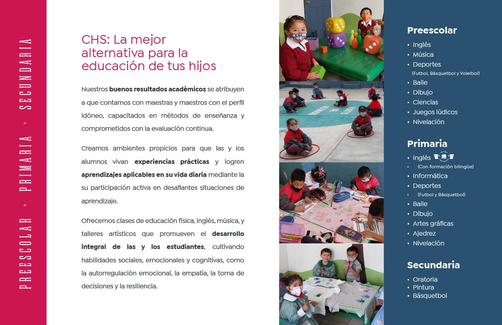

En el nivel de Preescolar, nuestro enfoque es el desarrollo integral de los niños. Fomentamos la curiosidad, el pensamiento crítico, la motricidad y las habilidades sociales a través de juegos, actividades artísticas y actividades didácticas que estimulan el aprendizaje desde una edad temprana.
Misión
Formar a los niños en un ambiente afectivo, que favorezca el desarrollo físico, emocional y social, estimulando su curiosidad y autonomía para prepararles para la transición a la primaria.
Visión
Ser el centro educativo preescolar más reconocido en Puebla, destacando por nuestro enfoque pedagógico innovador, que prepara a los niños para afrontar los desafíos educativos de los niveles superiores.
Plan de Estudios
Desarrollo del lenguaje y comunicación
Habilidades cognitivas y motoras
Matemáticas básicas
Desarrollo emocional y social
Iniciación artística (música, pintura)
Actividades lúdicas y juegos didácticos
Primaria
Propuesta Educativa
El nivel de Primaria del Colegio Hermanos Serdán se basa en una educación integral, promoviendo habilidades de pensamiento crítico, cooperación y trabajo en equipo. Nuestro enfoque incluye formación en valores, así como en ciencias, matemáticas y artes, asegurando una preparación completa para el futuro.
Misión
Brindar una educación integral que promueva el desarrollo académico, emocional y ético de los estudiantes, con un enfoque en la innovación educativa y el respeto por la diversidad.
Visión
Ser una institución educativa de referencia en Puebla, proporcionando una formación académica sólida y habilidades sociales para que nuestros estudiantes se conviertan en personas responsables y exitosas.
Plan de Estudios
Lengua y Literatura: Español, Literatura
Ciencias: Matemáticas, Física, Biología
Inglés como lengua extranjera
Educación cívica y ética
Geografía e Historia
Artes: Música, Danza, Artes Visuales
Deportes: Fútbol, Básquetbol
Computación: Uso básico de herramientas digitales

CHS
Colegio
Secundaria
Propuesta Educativa
En la Secundaria, los estudiantes desarrollan sus habilidades académicas, sociales y emocionales, promoviendo una formación integral que los prepara para los retos del futuro. Fomentamos el pensamiento independiente y el trabajo en equipo, así como la toma de decisiones éticas y responsables.
Misión
Formar jóvenes responsables, autónomos y éticos, con un conocimiento sólido en ciencias, humanidades y artes, para que sean líderes en su comunidad y en el mundo.
Visión
Ser una institución educativa líder en Puebla, reconocida por la excelencia en formación académica, ética y valores, que prepara a los estudiantes para afrontar los desafíos del mundo moderno.